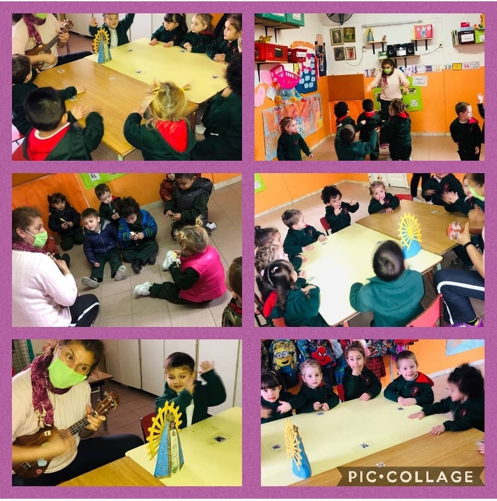
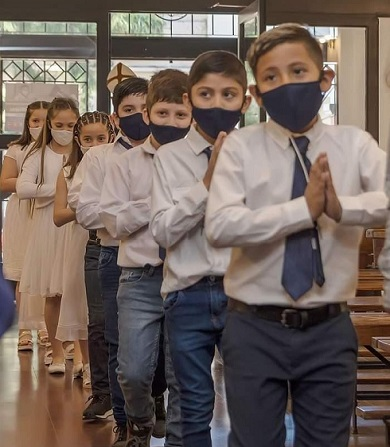
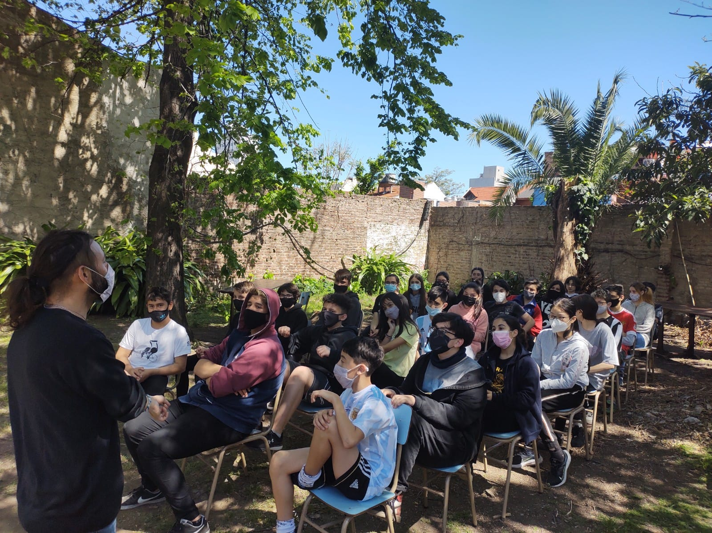

Pastoral en jardín
Desde pequeños enseñamos a nuestros alumnos y alumnas a vincularse con Jesús mediante el juego, la música, la oración y la reflexión.

Pastoral primaria
La primaria está fuertemente marcada por el proceso que hacen los alumnos y alumnas para recibir los sacramentos de iniciación cristiana.
Es también aquí donde pueden comenzar a sumarse al grupo Scout de la parroquia.

Pastoral secundaria
Las convivencias se desarrollan en todos los niveles. Particularmente en secundaria los proyectos solidarios, campamentos y retiros espirituales son la expresión de una pastoral juvenil activa.